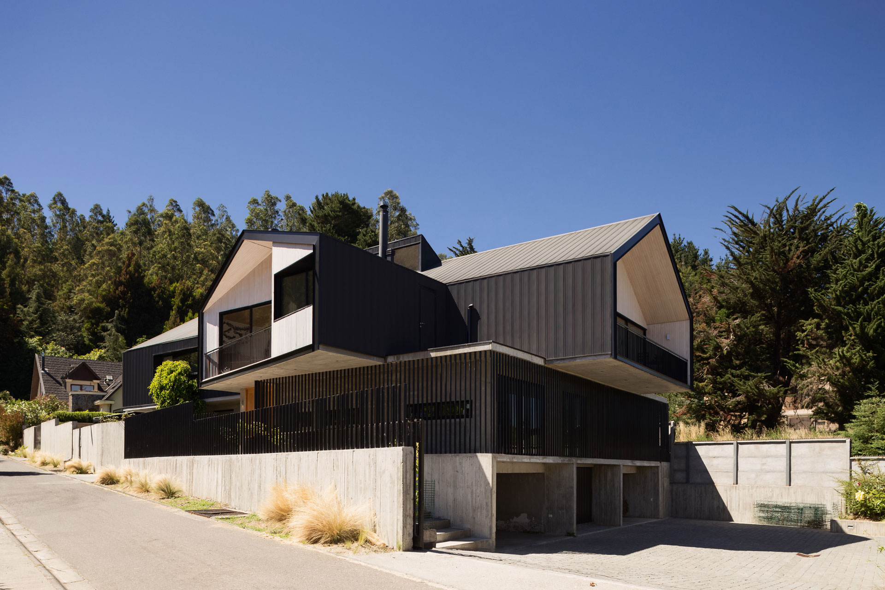

Somos un taller profesional que trabaja en forma colaborativa, con desarrollo integral de proyectos a la medida.
DX es un taller profesional de arquitectura que trabaja en forma colaborativa desde 1998, con desarrollo integral de proyectos a la medida: espacio público, mobiliario, equipamiento, oficinas y viviendas.
Su metodología se basa en un diálogo continuo entre el cliente, el taller y el ecosistema de DX. La retroalimentación entre las partes genera una respuesta particular e innovadora, que integra las necesidades y el contexto de cada encargo.
El equipo reúne profesionales que aportan una multiplicidad de miradas, y donde cada director de proyecto discierne entre las mejores soluciones. Esa experiencia de trabajo colaborativo asegura que cada problema cuente con un proceso integral y reflexivo.



Habitar entre dos patios, uno de agua y otro de piedra. Un jardín hundido, contenido por un muro alabeado, da independencia a dos casas que cohabitan en un mismo predio; la madera termotratada refuerza la curva, y un segundo muro curvo en la terraza abre las vistas al cerro Manquehue.
Un edificio que articula tres programas sociales de la fundación (Hospedería, PADAM y FAE) con un programa administrativo, a partir de las condicionantes del terreno: orientación, superficie, geometría, vistas, pendiente y acceso.
Dos galpones prefabricados de 1.000 m² en un terreno de 10.000 m², y un edificio de oficinas de 500 m² que da la imagen corporativa: una barra de 8 × 30 m en madera laminada de pino, con pilares diagonales en X.
Arquitectura pensada como un templo: espacios introvertidos y silenciosos, de luz tenue y cambiante, de formas simples, donde la luz entra e ilumina la práctica sin deslumbrarla.
Propuesta de 2016 para un parque de 50 hectáreas.
Dos casas en Curicó, desarrolladas por el taller.
Un proceso ordenado, desde el levantamiento hasta el control del desarrollo.
Estudios de posgrado en arte, medios digitales y gestión inmobiliaria (U. de Chile y UC). Fue profesor de composición en la UCH, la UC y la UTEM.
Su interés está en la relación entre la representación gráfica, la materialización de la obra y la incorporación de la tecnología. Ve la arquitectura como una experiencia humana, una extensión de nuestra piel.